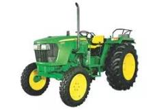
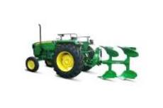
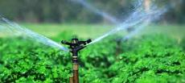
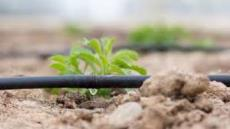

- E Series Tractors.
- John Deere 5E Series tractors are available from 50HP to 75HP. The 5E series tractors are specially designed for heavy duty applications and to handle large size implements with great ease and efficiency..

- Deluxe MB Plough.
- GreenSystem Deluxe MB Plough enables you to break hardpan of soil, loosen, mix and turn the soil efficiently.used to turn and break up soil, to bury crop residues, and to help control weeds.


- Drip irrigation.
- Drip irrigation is a type of micro-irrigation system that has the potential to save water and nutrients by allowing water to drip slowly to the roots of plants, either from above the soil surface or buried below the surface. The goal is to place water directly into the root zone and minimize evaporation.